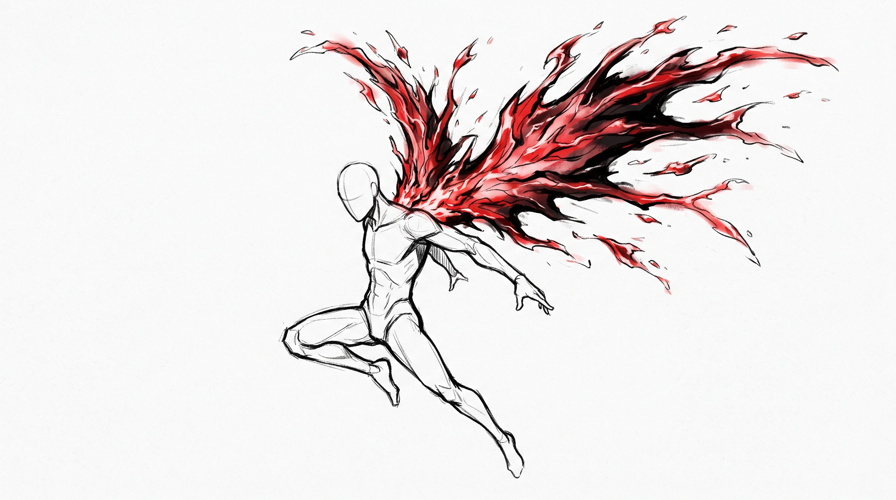
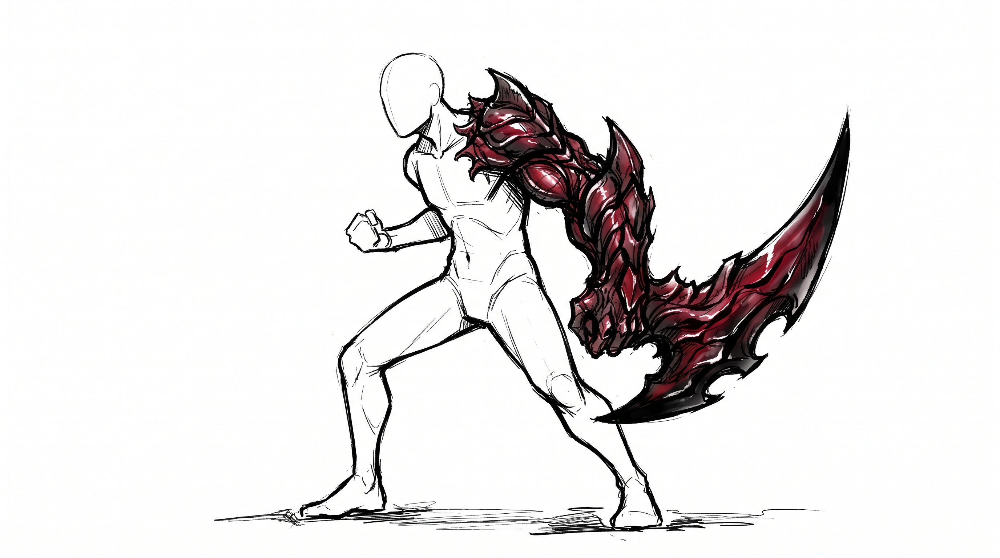
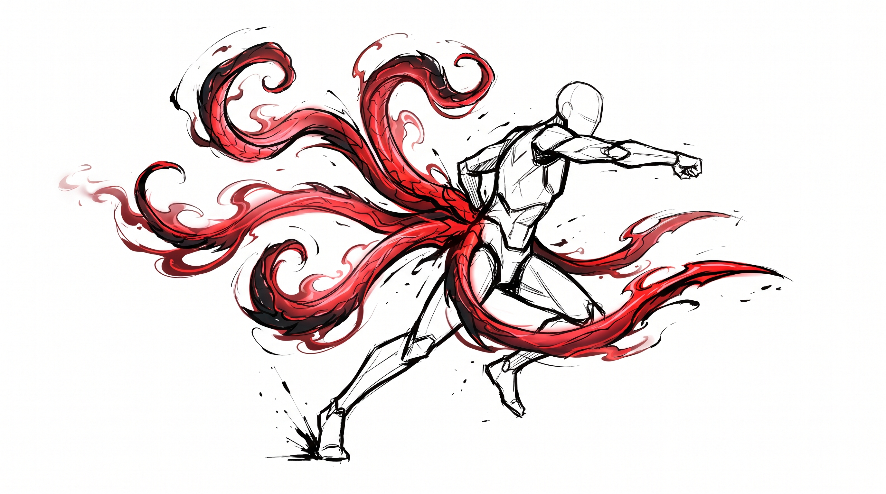
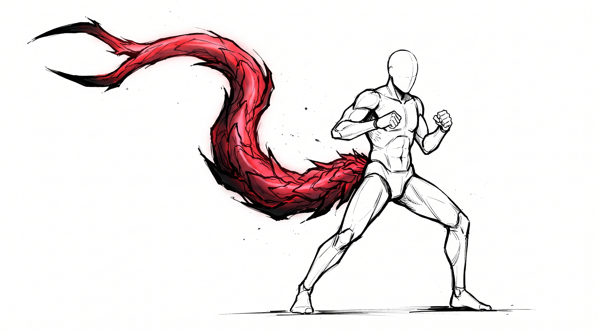
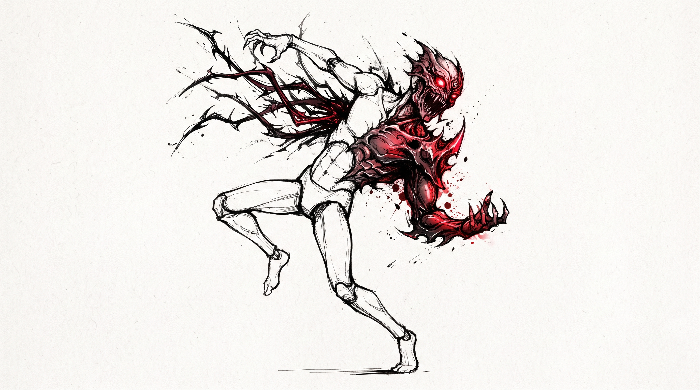
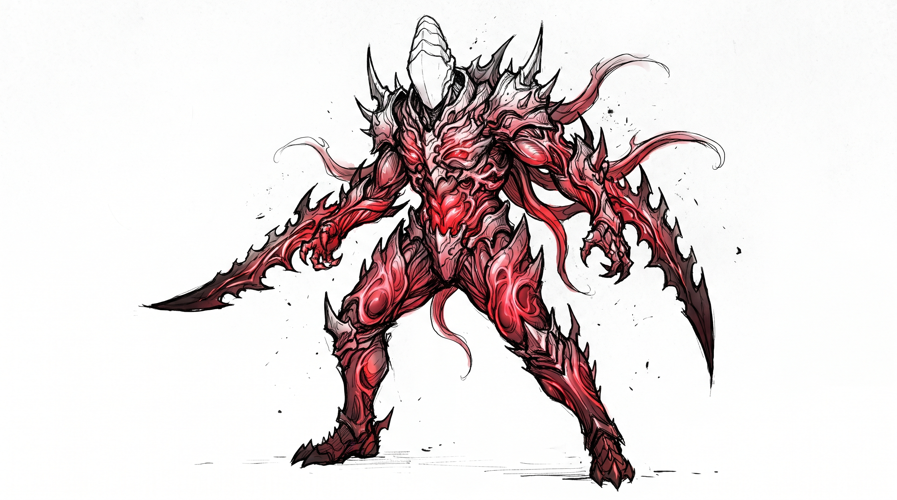
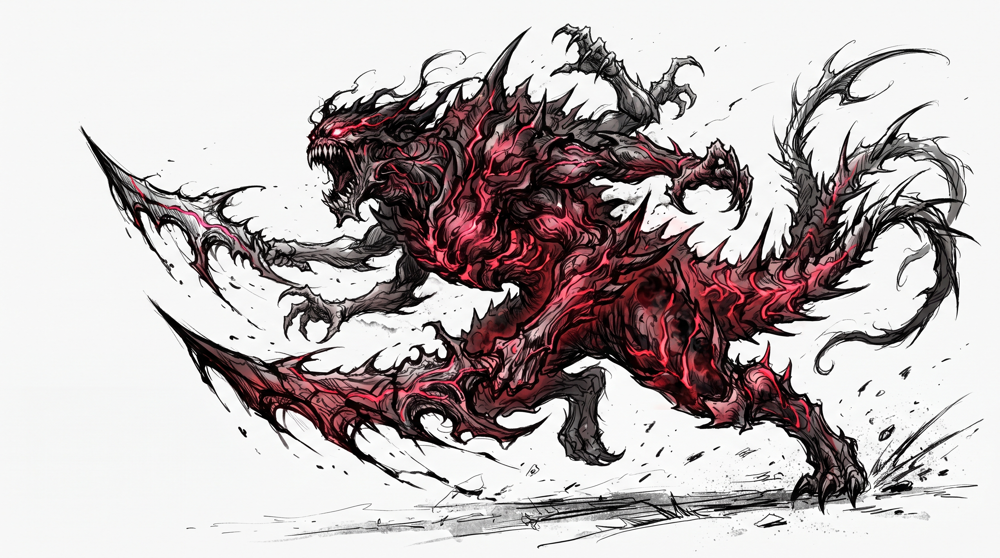

CA
10 + Mod. Agilidade
A Classe de Armadura representa a dificuldade de acertar um personagem.
Equipamentos e habilidades podem conceder bônus adicionais.Um sistema de RPG inspirado no horror urbano, na fome e na luta entre humanos e Ghouls.
Noites em Tokyo utiliza o sistema 2d10. Sempre que uma ação possuir risco significativo, o jogador realiza um teste.
O resultado é comparado à Classe de Dificuldade (CD) ou à defesa do adversário.
Poder físico e ataques corpo a corpo.
Velocidade, esquiva e iniciativa.
Resistência física e capacidade de suportar dano.
Conhecimento, análise e investigação.
Percepção, instinto e força mental.
Influência, presença e interação social.
Instinto predatório, necessidade e controle.
| Atributo | Mod. |
|---|---|
| 0 | -1 |
| 1 | +0 |
| 2 | +1 |
| 3 | +2 |
| 4 | +3 |
| 5 | +4 |
| 6 | +5 |
| 7 | +6 |
| 8 | +7 |
| 9 | +8 |
| 10 | +9 |
Dois resultados 10 nos dados representam um Acerto Crítico.
FALHA CRÍTICADois resultados 1 representam uma Falha Crítica.
O combate de Noites em Tokyo foi desenvolvido para ser rápido, brutal e cinematográfico.
A Classe de Armadura representa a dificuldade de acertar um personagem.
Equipamentos e habilidades podem conceder bônus adicionais.Ao chegar a 0 PV, o personagem fica Incapacitado.
Representa o desgaste causado por esforço, técnicas e combates prolongados.
O personagem pode dividir seu movimento antes e depois de sua ação.
O maior resultado age primeiro. Em caso de empate, vence quem possuir maior Agilidade. Persistindo o empate, maior Sabedoria.
O atributo utilizado depende da natureza do ataque. Ataques físicos normalmente utilizam Força. Ataques baseados em velocidade ou precisão podem utilizar Agilidade.
Armas, Kagunes e técnicas possuem seus próprios valores de dano.
Gaste sua reação quando for alvo de um ataque.
Reduza o dano recebido utilizando sua reação.
Acerta automaticamente e causa dano máximo do dado utilizado.
O ataque falha automaticamente e pode gerar uma consequência determinada pelo Mestre.
Ao chegar a 0 PV, o personagem fica incapacitado. No início de cada turno, realiza um teste:

+2 Agilidade
Ataques à distância.
Baixa resistência.

+2 Resistência.
Grande defesa.
Movimentos lentos.

+2 Regeneração.
Alto dano.
Instabilidade emocional.

+1 nos atributos físicos.
Equilibrado.
A vantagem natural concede superioridade contextual, mas nunca representa uma vitória automática.
Cada missão sem alimentação adequada aumenta a Fome do Ghoul em +1.
Fome elevada interfere no autocontrole, nos testes sociais e na recuperação de RC.
Em níveis extremos, o Mestre pode exigir um teste de Vontade para impedir um Frenesi.
A Kakuja é uma manifestação avançada da Kagune, associada ao acúmulo extremo de células RC e ao consumo de outros Ghouls.
A transformação pode criar uma armadura orgânica, lâminas, espinhos, membros adicionais e uma máscara que representa o instinto predatório do indivíduo.
Quanto mais profunda a transformação, maior o poder — e maior o risco de perder a própria identidade.

A Kagune começa a formar estruturas de proteção e expansão sobre partes do corpo. A transformação ainda é instável.
A ativação exige um teste de Vontade. Uma falha pode provocar Frenesi e perda temporária de controle.

A Kagune evolui para uma estrutura de proteção muito mais abrangente, envolvendo grande parte do corpo.
O usuário passa a possuir controle muito maior sobre a transformação e obtém resistência e regeneração superiores.

A forma monstruosa representa a expressão máxima do instinto predatório. A anatomia original pode ser parcialmente ou completamente obscurecida.
Essa manifestação será posteriormente ligada às habilidades exclusivas de Kakuja e aos níveis mais altos de RC.
Informações acumuladas durante investigações podem revelar o tipo de Kagune, nível de ameaça e identidade operacional de um Ghoul.